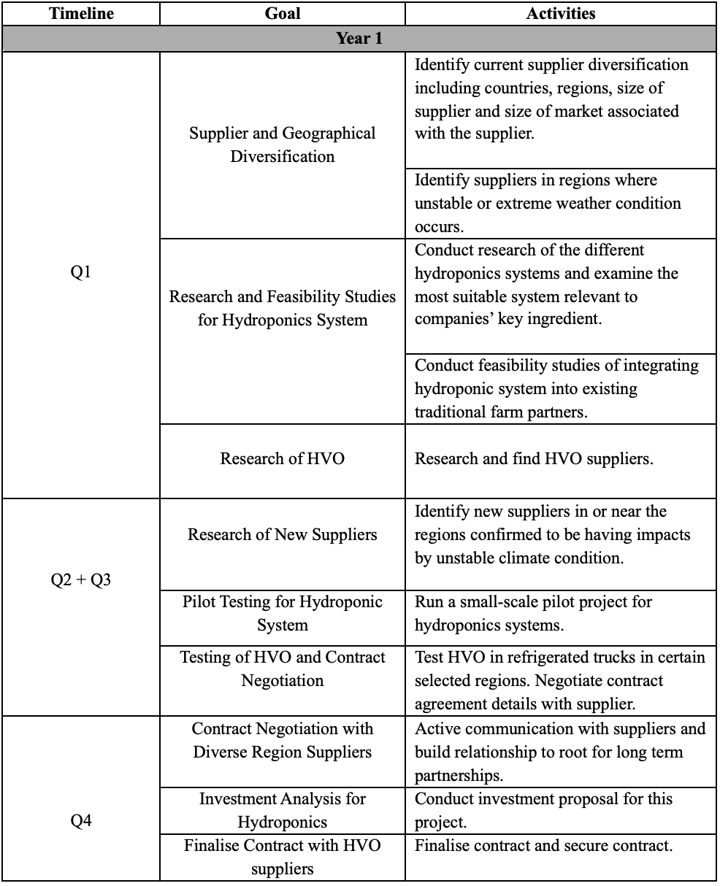

Strong Roots Supply Chain Strategy Report
Executive Summary
Strong Roots, an Irish plant-based frozen food company known for its healthy and sustainable frozen foods, has expanded into new markets across Ireland, UK, Europe, Asia and the US. Despite gaining a solid foothold in the global frozen food industry, it continues to face challenges that disrupt its supply chain. This essay will focus on the impact of climate change on Strong Roots’ supply chain, identifying the current supply chain issues the company is facing. I will propose strategies through conducting researches, to help mitigate the climate-related challenges and outline an implementation timeline for the first year and a brief overview of implementation for second year. Finally, I will justify the proposed strategies by referencing supply chain theories and providing examples of how other companies have successfully implemented similar approaches.
Introduction
Strong Roots is an Irish SME founded in 2015 which is known for producing plant-based, frozen and nutritious foods such as sweet potatoes fries, spinach bites and cauliflower hash brown. Strong Roots offers a wide range of vegan options (Strong Roots, no date) and centres its focus on producing high quality, healthy frozen foods. Starting off as a small local business, Strong Roots has now expanded its market across many countries in the UK, Europe, Asia and the US (Taylor, 2018). As the company is growing both domestically and internationally, tt must adapt its ingredients and sourcing practices to align with local food regulations and consumer preferences. Like the broader frozen food industry, Strong Roots faces challenges in logistics, material sourcing, and maintaining its sustainability goals. However, following its acquisition by McCain, the company may now have increased resources and capital to address these challenges more effectively.
Risk Assessment – Climate Change-Centred Supply Chain Challenges
Unstable Agricultural Production
Strong Roots emphasises complete transparency of its ingredients in the nutrition information provided to the customers (Strong Roots, no date). It is apparent that the company do not use any GMO (Genetically Modified Organism) as it serves its primary purpose of providing a healthier alternative to burgers, fried dishes and other frozen foods (Instacart, no date). Most of the vegetables and ingredients used by Strong Roots are sourced directly from farmers across different countries near their manufacturers. While this approach ensures the freshness and proximity of the ingredients, it poses the supply chain challenge due to unpredictable agricultural production. Extreme weather conditions such as storms, floods and droughts can interrupt crop growth and cause unexpected shortages, affecting ingredient availability (Prasad and Chakravorty, 2015).
Logistical Disruptions
Refrigerated foods are typically transported by sea and road to accommodate the low temperature needed to prevent the spoilage of the foods. Therefore, Strong Roots mainly relies on sea and road freights to deliver its raw materials and inventory (Global Research Consulting, 2023). For instances, the extreme lowering of water levels of some European rivers in summer 2022 (Limb, 2022) have hugely restricted the river freight capacity. This also led to an increased charge on road freights as the alternative transport option. Other conditions like extreme heatwaves can pose challenges of delaying the rail speed (Stugys, 2023) due to sun kink and raise issues of road cracking and other damage which eventually leads to an operational disruption of road freights (Stugys, 2023) which is one of the main modes of transport Strong Roots relies on. This disruption of supply chain logistics can ultimately lead to a higher cost of transportation affecting the efficiency and timeliness of inventory restocking.
Increase of Carbon Footprint
One of the main commitments of Strong Roots is to reduce carbon footprint (Strong Roots, no date). In its partnership with McCain in 2021, it can be seen that Strong Roots aligns with McCain’s commitment to sustainable practice, includes the implementing of generative agriculture (O’Sullivan, 2024). This has undoubtedly tackled a part of their sustainable goals. However, Strong Roots still faces greenhouse gas emissions challenge, mainly due to the heavy reliance on sea and road freights. As refrigerated truck are required to transport temperature-sensitive materials like vegetables (DHL Freight Connections, no date), it consumes more fuels than the standard trucks due to their cooling systems.
Proposed Strategic Plan to Tackle Climate Change Impact on Strong Roots
- Investment of Hydroponics
To respond to the unstable agricultural production caused by extreme weather conditions, Strong Roots could invest into Hydroponics to ensure the stable sourcing of raw materials (i.e. vegetables, etc). Hydroponics is the growing of plants using a “water-based nutrient solution” instead of soil (USDA, no date). With indoor hydroponics, the risk of disrupted crop production can be hugely reduced by preventing land degradation (eden green technologies, no date) and other damages and delays caused by extreme weather conditions (Rajendran et al., 2024). Hydroponics crops potentially reduce the level of contamination risk compared to soil-based farming which provides a more safe and healthy consumption (Rajendran et al., 2024) which allows the company to continue to strive its goal of providing heathy foods. While high capital is required to develop Strong Roots’ own Hydroponics system, Strong Roots could leverage its acquisition by McCain Food company to explore partnerships with Hydroponic companies. Strong Roots could establish a long-term contract, securing sustainable facilities through an external partner without the immediate capital outlay of building its own system.
- Investment of Vertical Farming
Vertical farming is the method of growing crops in vertically and horizontally stacked layers (eden green technologies, no date). In terms of addressing the climate change challenges Vertical Farming is conducted indoors and does not require soils or natural sunlight, hence it is not affected by weather conditions (Kalantari et al., 2017). Vertical Farming can also be an advantage towards countries with urban heat challenges (Kalantari et al., 2017) like the US, due to its nature of taking place indoor with artificial light source and soilless process. In terms of nutrition, produce from vertical farming does not contain any herbicides, pesticides, or artificial preservatives (Kalantari et al., 2017), aligning with the company goal of providing nutritious and healthy food options. Strong Roots can consider finding Vertical Farms in countries like the US, where such facilities are established, and develop a reliable supplier relationship to proactively prepared for weather disruptions.
- Supplier and Geographic Diversification
An approach to address the logistical disruption is to diversify the supplier geographically and fostering collaboration across multiple supply chain tiers. As Strong Roots have markets across different continents like the US, Europe, and Asia, the company should consider sourcing some ingredients like vegetables from different regions with less climate impact (Kittipanya‐ngam, Shi and Gregory, 2011). This enables Strong Roots to avoid relying on a single source of raw ingredients. For instance, when one supplier experience supply shortages, another supplier from a different region can fulfil the demand. Furthermore, Strong Roots should consider communicating and collaborating with both downstream and upstream logistics vendors. This enables the organisation to know where and how items are sourced, transported and processed, allowing it to take proactive measures to mitigate any potential risk.
- Implementation of Hydrotreated Vegetable Oil (HVO)
While the approach of adopting Hydroponics and Vertical Farming have already reduced carbon emission to some extent, Strong Roots could further reduce its carbon emission by replacing fuels used by agricultural machinery or refrigerated truck, to Hydrotreated Vegetable Oil (HVO). HVO is a low-carbon biofuel which can directly replace the regular diesel and offers a more biodegradable, renewable and sustainable approach in transportation (Smigins et al., 2023). By taking this action, Strong Roots would be able to reduce the greenhouse emission significantly hence further promotes its sustainable reputation.
Implementation Timeline
The following table is a suggested plan for Strong Roots for the first three years of the initial implementation of the strategies:

Year 2
In Year 2, the company expect to have successfully secured the contract with HVO suppliers. Strong Roots should continue to maintain stable and constant communication with diverse region suppliers and should expect to secure contract in the regions that is most likely in need of alternative suppliers. Furthermore, the company should continue to look into the capital and investment side for the hydroponics system.
Justification of Proposed Strategy
Investing in Hydroponics and Vertical Farming as a supply chain strategy aligns with the theory of Supply Chain Agility. Supply Chain Agility refers to the ability of a supply chain to respond quickly towards changes in supply or demand (Gligor et al., 2019). Agility focuses on efficiency and flexibility to changes in the market like consumer fluctuation (Sen, 2023) and the internal company environment, for instances, shortage of raw materials (Sen, 2023) caused by geopolitical threats or climate challenges. For instances, the supermarket chain Whole Foods Market (businesswire, 2023) partners with the vertical farm company Plenty to achieve a more sustainable approach in food (Radosavac, 2022), and also mitigating risk posed by unpredictable weather conditions. Supplier and geographic diversification relates to the Risk Pooling Theory of Supply Chain, meaning that the company distribute risk among several suppliers and geographical areas in order to mitigate the impact supply chain disruptions such as caused by extreme weather conditions (Yang and Schrage, 2009). An example of company is Nestlé which adopted geographical diversification in their sourcing of raw materials like coffee beans in order to mitigate risk of supply shortages caused by climate disruptions (Nestlé, no date). Lastly, the implementation of HVO follows the Sustainable Supply Chain Management (SSCM) framework (ASCM, no date).
Conclusion
In conclusion, Strong Roots’ commitment to sustainability has undoubtedly an important factor in motiving it to solve supply chain challenges posed by climate change. With investment of time and capital in climate resilient sourcing, diversifying supplier and using sustainable alternatives, Strong Roots can establish a more adaptive, effective and efficient supply chain. While the performance of the strategies needs to be monitored continuously, by investing into the potential challenge, it allows Strong Roots to mitigate the likelihood of significant losses due to adverse climate conditions. This proactive approach ensures the company remains resilient and prepared for the potential disruptions.
Bibliography (Harvard 12th Ed.)
Strong Roots (no date) Strong Roots | Our products, Strong Roots. Available at: https://strongroots.com/collections/products (Accessed: 27 October 2024).
Taylor, C. (2018) Fast-growing Irish food company puts down roots in UK market, The Irish Times. Available at: https://www.irishtimes.com/business/retail-and-services/fast-growing-irish-food-company-puts-down-roots-in-uk-market-1.3432839(Accessed: 27 October 2024).
How Strong Roots grew into a global food brand (2024). Available at: https://www.youtube.com/watch?v=lc-HJfevhh4 (Accessed: 27 October 2024).
Instacart (no date) Strong Roots Cauliflower Hash Brown, Vegan, Gluten Free, Frozen Patties (13.22 oz) Delivery or Pickup Near Me, Instacart. Available at: https://www.instacart.com/products/20035087-strong-roots-hash-browns-cauliflower-13-3-oz (Accessed: 4 November 2024).
Prasad, B.V.G. and Chakravorty, S. (2015) ‘Effects of Climate Change on Vegetable Cultivation - A Review’, Nature Environment and Pollution Technology, 14(4), pp. 923–929. Limb, L. (2022) Shocking photos show impact of drought on Europe’s life-giving rivers, euronews. Available at: https://www.euronews.com/green/2022/08/11/in-pictures-europes-mighty-rivers-are-drying-up-in-the-climate-driven-drought (Accessed: 4 November 2024).
Stugys, R. (2023) ‘How can climate change impact the logistics of fresh produce?’, Girteka - Responsible Logistics, 2 January. Available at: https://www.girteka.eu/how-can-climate-change-impact-the-logistics-of-fresh-produce/ (Accessed: 5 November 2024).
O’Sullivan, S. (2024) Strong Roots Partnership With McCain Strengthened As Expansion Planned, Checkout. Available at: https://www.checkout.ie/a-brands/strong-roots-partnership-with-mccain-strengthened-as-expansion-planned-209440 (Accessed: 5 November 2024).
Strong Roots (no date) Sustainability, Strong Roots. Available at: https://strongroots.com/pages/sustainability (Accessed: 5 November 2024).
DHL Freight Connections (no date) ‘What are Refrigerated Trucks? - DHL Freight Connections’. Available at: https://dhl-freight-connections.com/en/logistics-dictionary/refrigerated-trucks/ (Accessed: 12 November 2024).
USDA (no date) Hydroponics | National Agricultural Library, National Agricultural Library - U.S. Department of Agriculture. Available at: https://www.nal.usda.gov/farms-and-agricultural-production-systems/hydroponics (Accessed: 12 November 2024).
Rajendran, S. et al. (2024) ‘Hydroponics: Exploring innovative sustainable technologies and applications across crop production, with Emphasis on potato mini-tuber cultivation’, Heliyon, 10(5), p. e26823. Available at: https://doi.org/10.1016/j.heliyon.2024.e26823.
eden green technologies (no date) 10 Benefits of Hydroponics in Agriculture & Vertical Farming, Eden Green. Available at: https://www.edengreen.com/blog-collection/benefits-of-hydroponics (Accessed: 12 November 2024).
eden green technologies (no date) Vertical Farming: Everything You Need to Know, Eden Green. Available at: https://www.edengreen.com/blog-collection/what-is-vertical-farming (Accessed: 12 November 2024).
Kalantari, F. et al. (2017) ‘Opportunities and Challenges in Sustainability of Vertical Farming: A Review’, Journal of Landscape Ecology, 11. Available at: https://doi.org/10.1515/jlecol-2017-0016.
IBM (2023) What is the Internet of Things (IoT)? | IBM. Available at: https://www.ibm.com/topics/internet-of-things (Accessed: 13 November 2024).
Kittipanya‐ngam, P., Shi, Y. and Gregory, M.J. (2011) ‘Exploring geographical dispersion in Thailand‐based food supply chain (FSC)’, Benchmarking: An International Journal. Edited by H. Lorentz et al., 18(6), pp. 802–833. Available at: https://doi.org/10.1108/14635771111180716.
Smigins, R. et al. (2023) ‘Studies of Engine Performance and Emissions at Full-Load Mode Using HVO, Diesel Fuel, and HVO5’, Energies, 16(12), p. 4785. Available at: https://doi.org/10.3390/en16124785.
Gligor, D. et al. (2019) ‘Distinguishing between the concepts of supply chain agility and resilience: A multidisciplinary literature review’, The International Journal of Logistics Management, 30(2), pp. 467–487. Available at: https://doi.org/10.1108/IJLM-10-2017-0259.
Sen, S. (2023) Supply Chain Agility: Benefits and Strategies. Available at: https://www.oracle.com/ie/scm/supply-chain-agility/ (Accessed: 15 November 2024).
Bliedung, A. et al. (2024) ‘(PDF) Experiences of running a hydroponic system in a pilot scale for resource-efficient water reuse’, ResearchGate [Preprint]. Available at: https://doi.org/10.2166/wrd.2020.014.
Radosavac, V. (2022) ‘Walmart and Plenty Partner to Lead the Future of Fresh Produce’, Plenty, 25 January. Available at: https://www.plenty.ag/walmart-and-plenty-partner-to-lead-the-future-of-fresh-produce/ (Accessed: 15 November 2024).
businesswire (2023) Plenty Expands Distribution to All California Whole Foods Market Stores and Gelson’s Markets. Available at: https://www.businesswire.com/news/home/20230824358319/en/Plenty-Expands-Distribution-to-All-California-Whole-Foods-Market-Stores-and-Gelsons-Markets (Accessed: 15 November 2024).
Yang, H. and Schrage, L. (2009) ‘Conditions that cause risk pooling to increase inventory’, European Journal of Operational Research, 192(3), pp. 837–851. Available at: https://doi.org/10.1016/j.ejor.2007.10.064.
Nestlé (no date) Sustainable Sourcing Coffee | Nestlé Australia. Available at: https://www.nestle.com.au/en/sustainability/sustainable-sourcing/coffee (Accessed: 15 November 2024).
coresignal (no date) Investment Analysis: 4 Types Explained With Examples. Available at: https://coresignal.com/blog/investment-analysis/ (Accessed: 15 November 2024). ASCM (no date) What is Sustainable Supply Chain Management? (SSCM) | ASCM. Available at: https://www.ascm.org/topics/sustainable-supply-chain-management/ (Accessed: 15 November 2024).